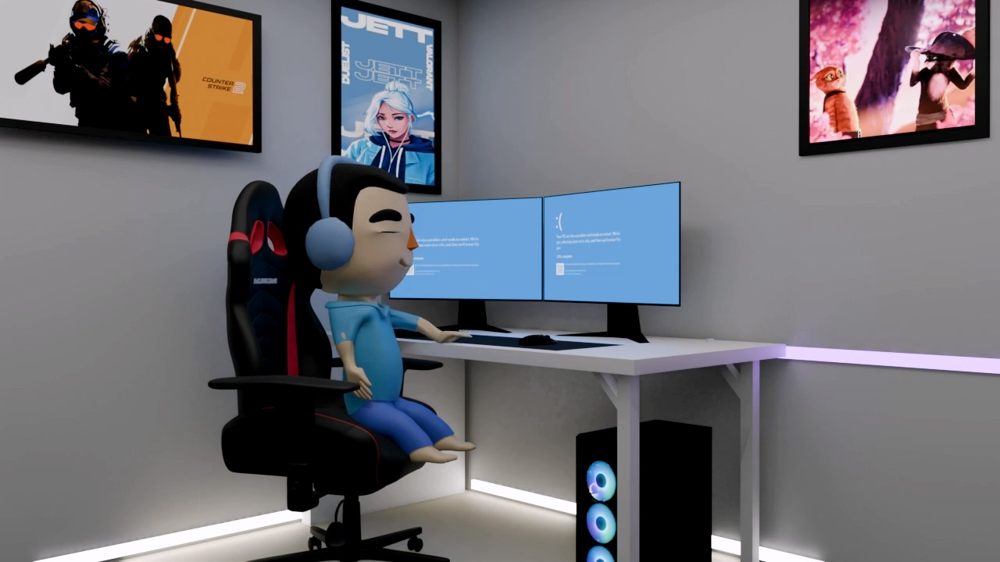
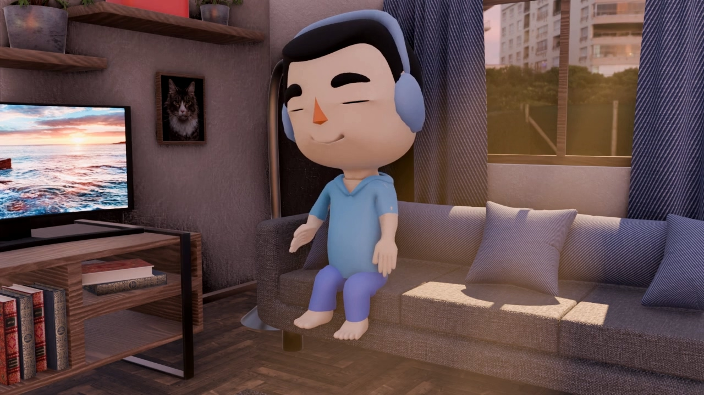
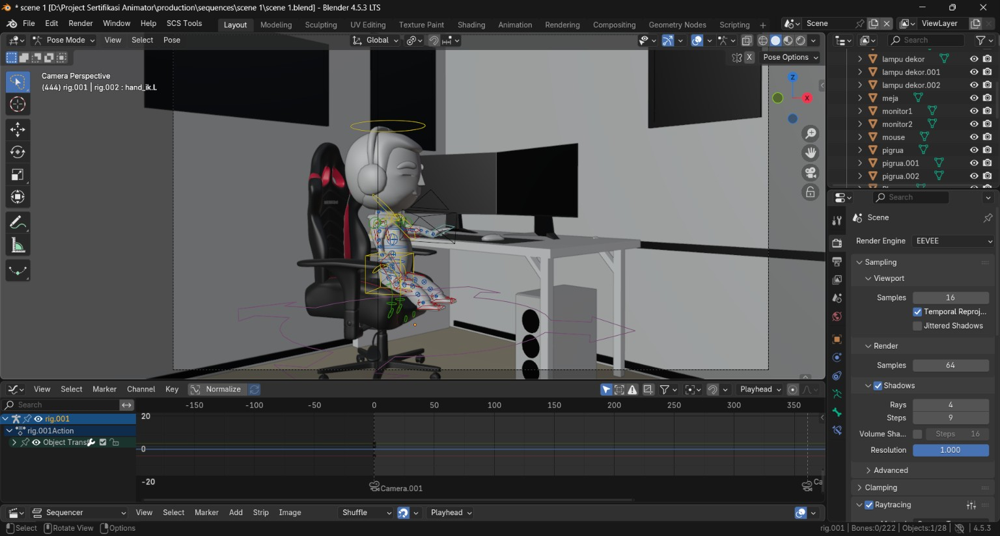
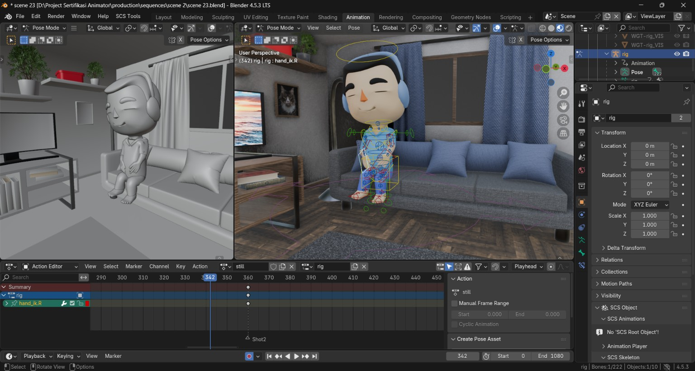
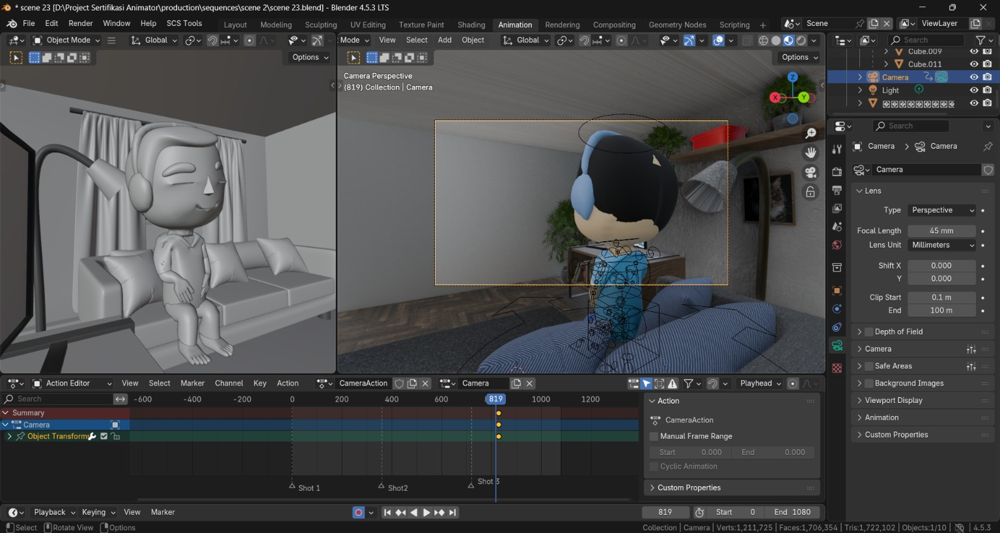
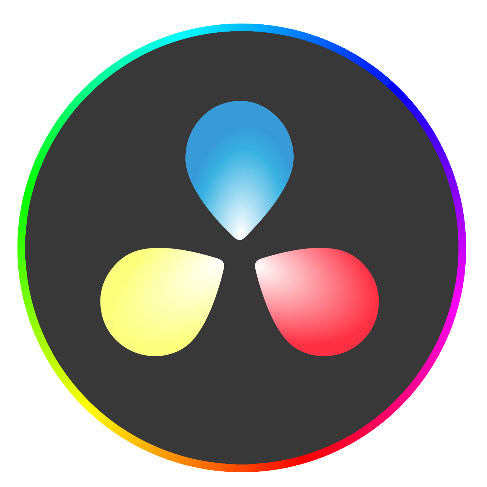

STORY OF THIS PROJECT

Focus and Pause adalah animasi 3D loop yang dibuat sebagai bagian dari proses sertifikasi kompetensi 3D Lead Animator BNSP yang disenggelarakan oleh LSP PENS. Ceritanya menangkap momen sederhana ketika seseorang berhenti sejenak dari kesibukan untuk beristirahat dan mengisi kembali energi.

Proses produksi dimulai dari penyiapan karakter dan adegan di Blender. Rig karakter digunakan untuk menyusun pose dan gerakan yang mendukung momen istirahat dalam cerita.

Pose karakter ditata agar gerakannya terasa santai dan nyaman. Pengaturan ini membantu membangun suasana jeda yang menjadi inti dari animasi.

Adegan kemudian disusun melalui pengaturan kamera dan shot untuk memperlihatkan karakter serta ruang di sekitarnya. Hasil akhirnya dirangkai menjadi animasi loop.
Dengan suasana ruang yang hangat dan gerak karakter yang berulang, karya ini mengajak kita menemukan keseimbangan: tetap fokus saat berkarya, lalu memberi diri sendiri waktu untuk jeda.
TOOLS USED FOR THIS PROJECT

DAVINCI RESOLVERESULT OF THIS PROJECT
Mari kita bangun sesuatu yang luar biasa bersama
Terbuka untuk kesempatan magang, project freelance atau kolaborasi riset.